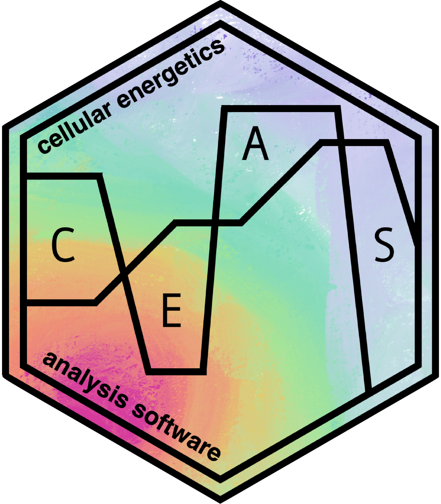

Calculate ATP Production Mean and Standard Deviation
Source:R/energetics.R
get_energetics_summary.RdCalculates mean and standard deviation of ATP production from glycolysis and
OXPHOS at points defined in partition_data and with values calculated
using the get_energetics function
Arguments
- energetics
a data.table of Seahorse OCR and ECAR rates (from
get_energetics)- error_metric
Whether to calculate error as standard deviation (
"sd") or confidence intervals ("ci")- conf_int
The confidence interval percentage. Should be between 0 and 1
Examples
rep_list <- system.file("extdata", package = "ceas") |>
list.files(pattern = "*.xlsx", full.names = TRUE)
seahorse_rates <- read_data(rep_list, sheet = 2)
partitioned_data <- partition_data(seahorse_rates)
energetics_list <- get_energetics(partitioned_data, ph = 7.4, pka = 6.093, buffer = 0.1)
energetics_summary <- get_energetics_summary(energetics_list)
head(energetics_summary[, c(1:5)], n = 10)
#> Key: <exp_group>
#> exp_group count ATP_basal_resp.mean ATP_basal_resp.sd ATP_basal_resp.se
#> <fctr> <int> <num> <num> <num>
#> 1: Group_1 22 1100.0468 72.25935 15.405746
#> 2: Group_2 24 1136.0653 41.34070 8.438635
#> 3: Group_3 24 1317.1044 52.53006 10.722653
#> 4: Group_4 22 626.1267 85.60314 18.250651
head(energetics_summary[, c(1, 2, 6, 7)], n = 10)
#> Key: <exp_group>
#> exp_group count ATP_basal_resp.lower_bound ATP_basal_resp.higher_bound
#> <fctr> <int> <num> <num>
#> 1: Group_1 22 1069.8521 1130.2415
#> 2: Group_2 24 1119.5259 1152.6047
#> 3: Group_3 24 1296.0883 1338.1204
#> 4: Group_4 22 590.3561 661.8973